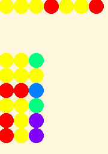
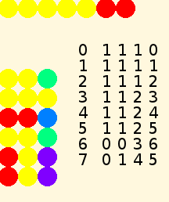

Turtle Art Turing Machine¶
One can do a surprising amount of Computer Science in Turtle Art.


This is an example of a universal computer designed by Alan Turing in order to investigate problems in computability. As far as we know (Church-Turing Thesis), any function that can be computed by an effective algorithm can be computed by a Turing Machine. A multitude of other systems has been proposed, and all are equivalent to the Turing Machine and to each other. However, there are questions that we would like to ask that neither a Turing Machine nor any of those other systems can answer.
Before we get to those undecidable questions, however, how is a Turing Machine constructed, and what is our Turing Machine going to do?
Plan¶
This Turing Machine is the simplest kind of adding machine. It starts, as in the first illustration, with two blocks of cells with a separator in between. The number of cells in each block is our input, which the user can change by editing the Setup action. The output will be a single block containing as many cells as the sum of the two input numbers. It will do this by replacing the separator with the color of the number blocks, and erasing one number cell at the end of the second block, giving a configuration as in the second illustration for its result. This model Turing Machine also logs each of its actions in a table, described below.
The Structure of a Turing Machine¶
A Turing Machine is not designed for efficiency, like commercial microprocessors. It is designed to be easy to reason about, and so is about as simple as Turing and a few other mathematicians could make it.
The essential elements of a Turing machine are
a tape that can be extended as much as needed, consisting of cells containing symbols; here, a line of colored dots
a program table, consisting of three columns and some number of rows of instructions; here, a rectangle of colored dots
a head that reads and writes symbols on tape, and follows instructions in the program table; here, the turtle with certain defined Actions
The machine can be in any of a finite number of states, represented here by color values. One of the states is interpreted as Halt: the Machine stops executing the program. The rows of the program table correspond to combinations of the current state with the symbol read from the current cell on the tape. For a three-state machine with two symbols, such as our adding machine, the order of the program table is
State |
Symbol |
Line |
|---|---|---|
1 |
1 |
1 |
1 |
2 |
2 |
2 |
1 |
3 |
2 |
2 |
4 |
3 |
1 |
5 |
3 |
2 |
6 |
This table starts counting at 1. In programming it is often more convenient to start counting at 0. You will see examples of this practice if you examine the code for this Turing Machine.
In operation, the starting point is a given tape with a finite sequence of symbols prewritten on it, a given program, and the Turing Machine head over the leftmost symbol on the tape in state 1. At each step, the head reads the symbol in the current cell, then follows the instruction in the row corresponding to that symbol and the current state. There are three parts to the instruction:
A symbol to write in the current cell
An instruction to move one cell left or right
The state for the next step
The Structure of This Turing Machine¶
The actual program table in numerical symbols is
Write |
Move |
State |
Interpretation |
|---|---|---|---|
0 |
1 |
2 |
If cell = 0 Write 0. Go right. State 2 End of first number |
1 |
1 |
1 |
If cell = 1 Write 1. Go right. State 1. Continue to end of number |
0 |
0 |
3 |
If 0 Write 0. Go left. State 3 End of second number |
1 |
1 |
2 |
If 1 Write 1. Go right. State 2 |
0 |
1 |
4 |
If 0 Write 0. Go right. State 4. Halt |
0 |
1 |
4 |
If 1 Write 0. Go right. State 4. Halt |
Where
Symbols 0 and 1 are represented as Red and Yellow on the tape
Move 0 is Left and 1 is Right
States are really numbers, represented in the table as the color with number 20 times the state so that we can tell the differences among them. The Read Pixel block in Turtle Art pushes the RGB values of the pixel on the stack, not the Turtle Art color number, so we have to have special logic to translate back to states.
In addition to the essential workings of the Turing Machine, this program logs each step in the process on the screen, showing the numerical values of the step, symbol, move, state, and cell on each pass. Students are encouraged to run the program in step mode (Turtle or Bug), watching the process unfold.
The process proceeds in stages.
Lines 0-2 of log: We begin in state 1 with symbol 1 in cell 1, and execute line 2 in the program. This tells the Machine to write the symbol that is already there, move right, and continue in state 1. Repeat until the Turtle sees the other color, symbol 0.
Log 3: Go to line 1 of the program. Write color 1, move right, go into state 2
Log 4-5: As long as we see color 1, we execute program line 4, which tells us to rewrite it in the cell, go right, and stay in state 2.
Log 6: When we see color 0 for the second time, we execute line 3, which says to rewrite 0, go left, and go into state 3
Log 7: Now we arrive at line 6, which says to overwrite 1 on the last cell with color 0, go right, and go into state 4 (Halt).
Line 5 is never executed, but has to be there to complete the table.
In summary, move past the first number block, rewrite 0 to 1 (removing the separator), move past the second number block, back up one step and rewrite 1 to 0 to balance the extra 1 written earlier.
For complete details about the workings of this Turing Machine, see Turtle Art Code for Turing Machine and Logo Code for Turtle Art Turing Machine.
Turing’s Research¶
Among others things, Turing
designed a program for a Universal Turing Machine, where the program of a regular Turing Machine would appear in a block on the tape along with an area for working storage, and the head would operate on the tape before and after it as if the two segments were connected together.
proved that no Turing machine can analyze the programs for all other Turing machines to decide which of them would ever halt. (If there were such a Halting Oracle, we could easily modify it into a program that would halt for programs that did not halt, and would not halt for programs that halt. When applied to itself, it would thus halt if and only if it did not halt, a contradiction.)
created an electromechanical cracker, the Bombe, to determine the settings on German Enigma cipher machines from transmitted messages, allowing all intercepted German message traffic to be read. (This Ultra Secret was the biggest British secret of World War II, bigger than the Double Cross System turning of German agents and the secret of the Normandy landing.)
invented the Turing Test for Artificial Intelligence, asking whether an AI could successfully pretend to be a person at the other end of a Teletype connection.
made important contributions to other branches of mathematics, to design of actual computers, and to mathematical biology.
2012 is Alan Turing Year - a centenary celebration of his life and work. www.turingcentenary.eu